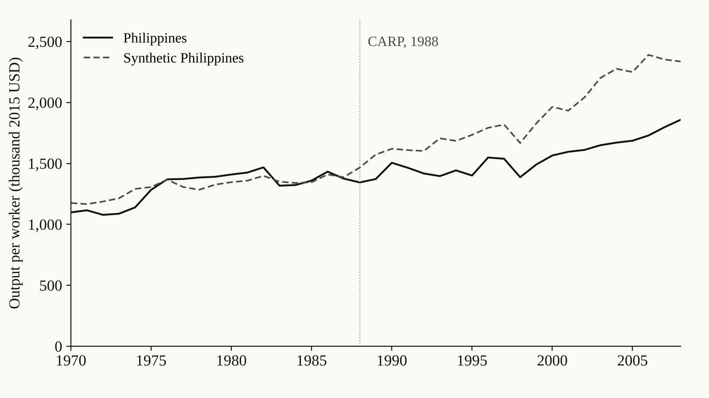

Lead project · Agricultural economics · Synthetic control method · Impact evaluation
CARP and Agricultural Productivity: A Synthetic Control Study
Did the 1988 agrarian reform change farm productivity? A synthetic control comparison for labor, land and TFP.
Context. The Comprehensive Agrarian Reform Program (CARP) began in 1988 and still shapes Philippine debates on equity and rural development. Its effect on national farm productivity has rarely been tested against a credible counterfactual.
Method. I used the synthetic control method to build a “synthetic Philippines” that tracks the real one before 1988, then compared the two on labor productivity, land productivity and TFP after the reform. A placebo run on GDP per capita checked whether the gaps were specific to agriculture.
Findings. From 1989 to 2008 Philippine agriculture ran below its synthetic control: labor productivity by about 18.2%, land productivity by 16.1% and TFP by about 9%. GDP per capita was only 2.5% below, so the shortfall belongs to agriculture, and most of it comes from slower TFP growth.
